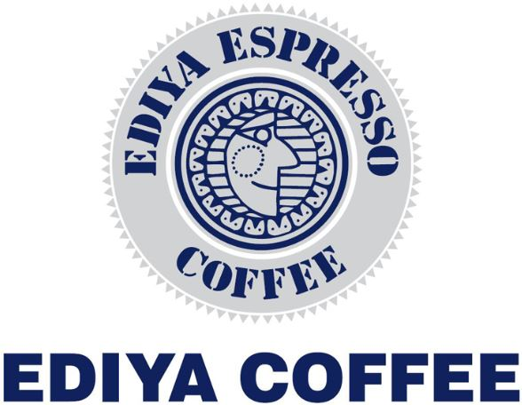
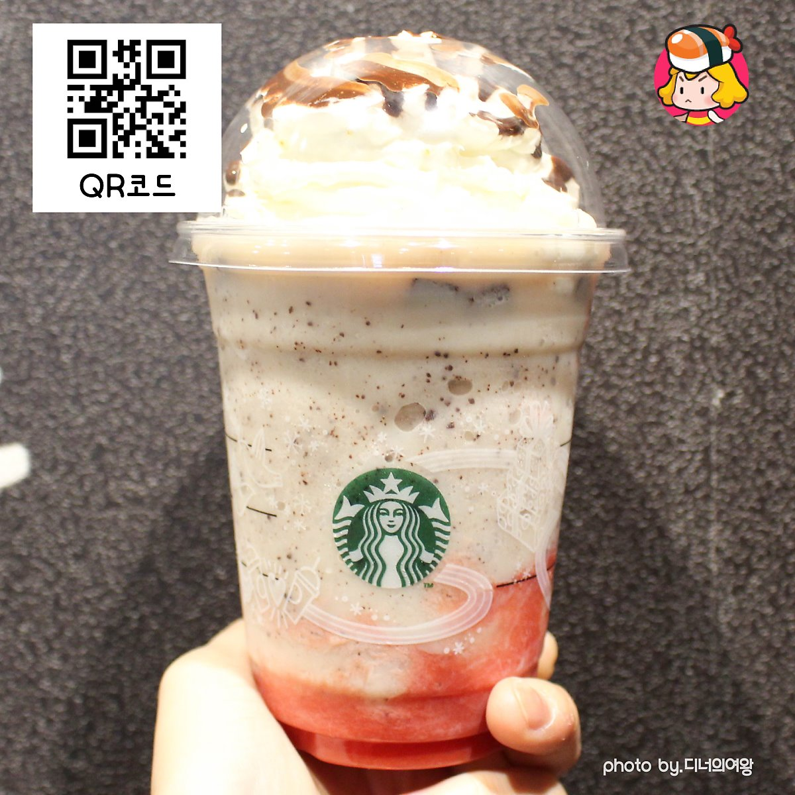
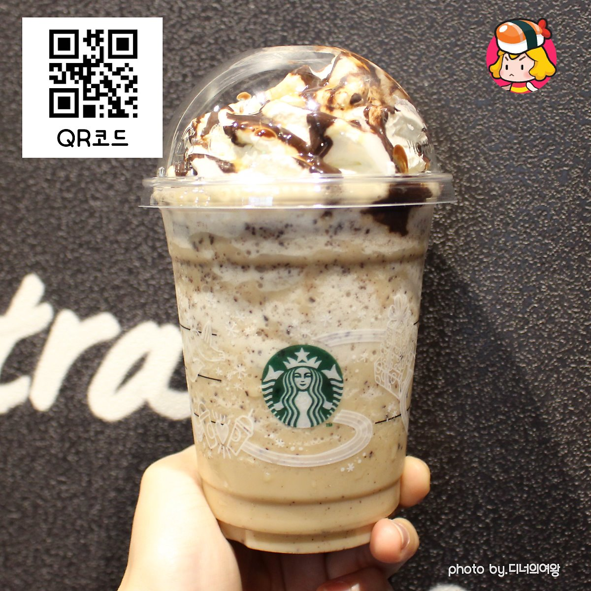

스타벅스 |
 이디야 커피 |
|---|---|
투썸플레이스 |
파스쿠찌 |

1. 돼지바 프라푸치노딸기크림프라푸치노(두유) + 딸기시럽 4 + 자바칩 반반 + 초콜릿 드리즐돼지바와 맛이 비슷하다. 상큼하고 달달한 맛이 좋다면 추천! |

2. 트윅스 프라푸치노바닐라크림 프라푸치노 + 자바칩 2 + 에스프레소 휘핑 + 초콜릿 드리즐바닐라와 초코가 섞여 오레오를 느낄 수 있다. 우유와 오레오를 함께 먹는 느낌! 바닐라 프라푸치노가 다른 음료에 비해 달지 않아 무난하다. |

3. 오레오 프라푸치노카라멜 프라푸치노 + 자바칩 반반 + 헤이즐넛 시럽 1 + 초콜릿 드리즐초코바 트윅스 맛이 난다. 카라멜과 초콜릿으로 달달함이 배. 스트레스를 많이 받았다면 추천! |